Plugin Version: 2.6.6 | Release Notes
Plugin Version: 2.6.6 | Release Notes
Overview
The Enhanced Login plugin provides a higher level of security by creating and managing security policies inside ProcessMaker according to the settings made by an administrator user. The plugin monitors login sessions through the IP address where the session was started or through the IP address of the device (or both). It can block duplicate login sessions from the same user or login sessions from multiple devices.
It also adds a security layer to user login through a 2-step verification method. Users who are configured to have 2-step verification will receive an email with a verification token or a token matrix generated by the plugin. After logging into ProcessMaker with their user credentials (step 1), they must enter the code (step 2) to enter ProcessMaker.
In addition, the plugin also provides an easy-to-use interface to add password policies, which are normally set inside one of ProcessMaker's configuration files.
Requirements
- ProcessMaker Enterprise version 3.0 or higher with the corresponding license.
- Read this documentation to view the table of ProcessMaker's supported stacks.
- To view a list of supported browsers, read the following documentation.
Restriction
Please take into consideration the following restriction:
- SAML plugin cannot authenticate to the Enhanced Login plugin. Enhanced Login plugin does not authenticate users as does LDAP or the Google Authentication plugin.
Installation
Log in with a user, such as "admin", who has the PM_SETUP_ADVANCE permission in his/her role and then go to Admin > Plugins > Enterprise Manager. Either install the Enhanced Login plugin by clicking on  Install from File and uploading the plugin file or by clicking on its Install Now button in the list of available plugins.
Install from File and uploading the plugin file or by clicking on its Install Now button in the list of available plugins.
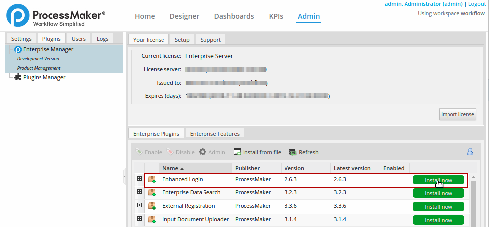
After installing the plugin, make sure that the Enhanced Login plugin is
 enabled.
enabled.
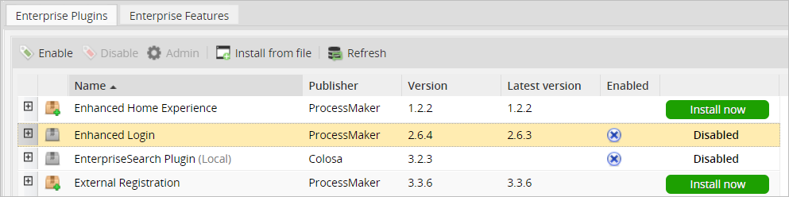

Configuring the php.ini
This plugin requires the following configuration in php.ini:
session.save_path is a path that defines the argument which is passed to the save handler. If you choose the default files handler, this is the path where the files are created. This configuration is required for all version 3.x from ProcessMaker.
If your ProcessMaker instance is with PHP 7.1.x, use:
For more information see this documentation.
Glossary
- Coordinate Matrix: Matrix of printed serial numbers (usually paired data) ordered in rows and columns. Rows are titled with ascending numbers starting from 1 and columns are ordered alphabetically starting from A.
- Token: 5-digit code that is sent to the user in an email to allow authentication under the security policies set for the user login.
- PP: Passwords Policies.
Configuring the Plugin
To configure the plugin, go to the Admin section of ProcessMaker. Then, look for the Enhanced Login tab using the arrow at the right, and click on it to access its options.

The Enhanced Login tab has three available options to work with:
2 Step Verification
This option is a login method that adds an extra layer of security, making it 2 steps to log in to ProcessMaker.
The first step is the normal login where users enter their username, their password and, optionally, the workspace they are working on. The second step asks users to enter a verification code generated by the plugin and sent to the user's email to allow access to ProcessMaker.
To configure this option, log in to ProcessMaker as a user who has the PROCESSMAKER_ADMIN role, such as "admin". Then, go to the Enhanced Login tab inside Admin panel. Click on the 2 step verification option in the left panel to access the list of users in the right panel.
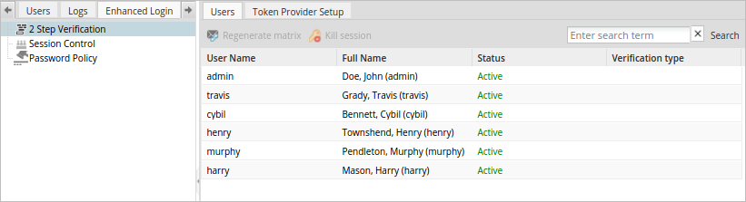There are two tabs available in this section:
Users
The Users tab shows a list of all the existing users and provides a dropdown to select their login method in the Verification Type column.
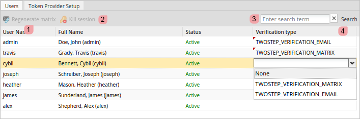Regenerate Matrix: Generates a new token matrix and emails it to users whose login method is TWOSTEP_VERIFICATION_MATRIX. Remember that this button is available only if the user has the TWOSTEP_VERIFICATION_MATRIX method assigned.
Select one user from the list and click the Regenerate Matrix button. A message like the one below will open:
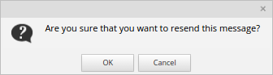
Click on Cancel to close the message, or click on OK to generate a new matrix and send it to the user's email. A new message will open:
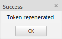
- Kill Session: Closes any active session. Select a user that has been set with a TWOSTEP_VERIFICATION_MATRIX or TWOSTEP_VERIFICATION_EMAIL verification type and click on the Kill Session button. A message like the one below will open:

Click on Cancel to close the message, or click on OK to close the session. A new message will appear:
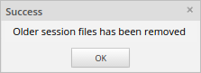
- Search: Enter the user name, first or last name of a user into this field and click on the Search button to search for a particular user.
- Verification Type: The verification type of a user, which can be none, TWOSTEP_VERIFICATION_MATRIX or TWOSTEP_VERIFICATION_EMAIL. For more information, read this section.
The list of users can be sorted based on either username, full name or status. To do this, hover the mouse pointer over the left side the column until a black down arrow appears, click on it to expand a menu. The columns can be sorted alphabetically in ascending or descending order.
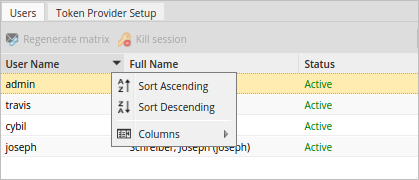
Verification Type
The verification type of a user can be:
TWOSTEP_VERIFICATION_MATRIX
This option is only available in the Verification Type dropdown after configuring and enabling the Matrix option under Token Provider Setup.
By selecting this option, the user will receive an email with a matrix token generated by the system, which must be entered to access ProcessMaker. Read this section to learn how to enable and configure this option.
TWOSTEP_VERIFICATION_EMAIL
The TWOSTEP_VERIFICATION_EMAIL option is only available after configuring and enabling the Email option under Token Provider Setup.
By selecting this option, the user will receive an email with a code generated by the system, which must be entered to access ProcessMaker. To learn how to enable and configure this option, read this section.
Token Provider Setup
Click on this tab to configure the two methods to provide access tokens to users. These methods are Matrix and Email, which are explained below.
Matrix
The MATRIX option sends an email to the user with a token matrix generated by the plugin, which will allow the user to enter ProcessMaker. The system will ask for a specific coordinate of the matrix in the format letterNumber. For example, in a 100-cell matrix, there will be 10 rows and 10 columns (matrix are always square). Each row will be numbered starting from 1, and each column will be assigned a letter starting from A. Thus, the first cell will always be A1, the second cell in the first row will be B1 and so on.
To enable this option, configure the options detailed below:

- Enable/Disable: Enables or disables the method. If it is enabled, it will be available in the Verification Type column in the list of users, and it will be possible to make users log in with this method.
- Matrix size: Specifies the size of the square matrix used to generate the tokens.
- Token size: Specifies the number of digits or characters the token will have.
- Token type: Selects the type of token that will be built, which can be Numeric, Alphabetic and Alphanumeric.
- Generate matrix: Regenerates the matrix every "N" days and sends the new matrix to the user's email to log in again.
- Usage Time: Enables or disables the generation of a new matrix.
After the configuration is defined, click Save Settings to save the configuration. Click Save Settings even if this is the first time that the Matrix is being configured because this saves the default values of the Token type. After save settings, a confirmation message will be displayed:
After the user logs into ProcessMaker with their username and password, a new interface will open asking for the code, as in the following image:
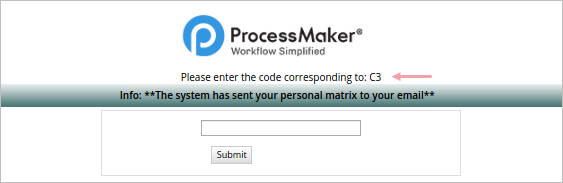
The user must check his or her email inbox and open the email with the matrix of tokens generated. In this case, the size of the matrix is 4 and has alphanumeric tokens. In this example, the message in the window asks for C3, the code that must be entered into the field is in column C, row 3 (CR61).

Enter the code and click on the Submit button to access ProcessMaker.
Enable this option to send a single login token to the user's email. The characteristics of the Email section are:
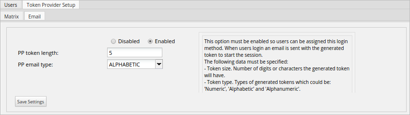Where:
- Enable/Disable: Enables or disables the method. If it is enabled, this authentication method will be available in the Verification Type column in the list of users, and it will be possible to make users log in with this method.
- PP Token Length: Number of digits or characters the generated token will have.
- PP Email Type: The type of token generated: Numeric, Alphabetic or Alphanumeric.
Click on the Save Settings button to save all settings made in this section.
After the user logs into ProcessMaker with their username and password, a window opens asking for the code, as in the following image:
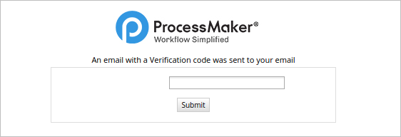
The user must check his or her inbox and find the email with the code generated. In this example, the code is DJFPY.
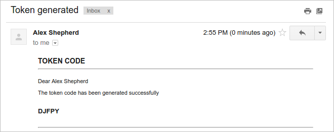
Enter the code (DJFPY) sent in the email and click on the Submit button to enter ProcessMaker.
Session Control
This option allows administrators to restrict open sessions belonging to one user. There are two ways to restrict user login:
- Restriction by IP: Restricts logins made by the same user from different IPs.
- Device restriction: Restricts logins made by the same user from different devices.
Both restrictions can be disabled, additional logins using the same credentials can be blocked when there already is an open session, or existing sessions can be killed to allow a new login.
To use this option, go to the Enhanced Login tab inside Admin, then click on the Session Control option in the left panel. A window with the following settings will open:
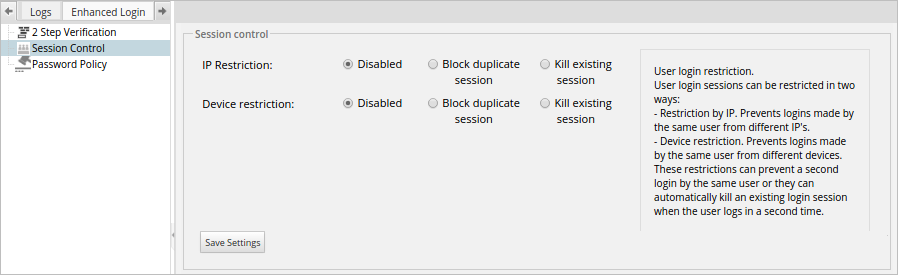
Where:
- IP Restriction: There are three settings for this option:
- Disable: Select this option to disable this restriction and allow a user to login in the same IP address for multiple sessions.
Block Duplicate Session: Select this option to block any additional sessions belonging to the same user with the same IP address. The following message will be shown if a user tries to log in with the credentials of a user that has already a session open:
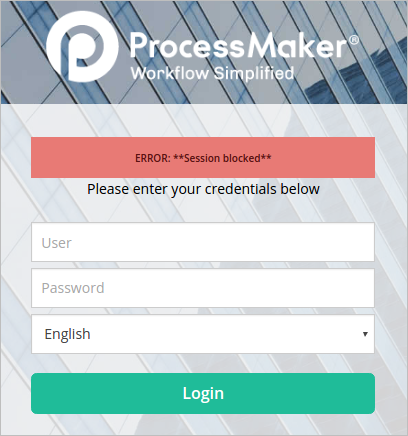
- Kill Existing Session: Select this option to kill an existing session. This is very helpful, for example, if a user is trying to log in on another browser or on the same browser, but the session information has not been deleted. When this option is selected, the user will be able to enter ProcessMaker normally with the same IP address, but with a new session.
- Device Restriction: There are three settings for this option:
- Disable: Select this option to disable this restriction and allow users to log in from different devices.
Block Duplicate Session: Select this option to block any attempt to start another session by the same user on another device. The following message will be shown if a user tries to log in with the credentials of a user that has already a session open:
- Kill Existing Session: Select this option to kill an existing session. When this option is selected, if a user is trying to log in but there is already a session open on another device, the first user that logged into ProcessMaker will lose their session so a new session can be opened on another device.
Click on the Save Settings button to save all configurations made in this section.
It is also possible to make multiple combinations and use both restrictions at the same time. For example, if the following has been set:
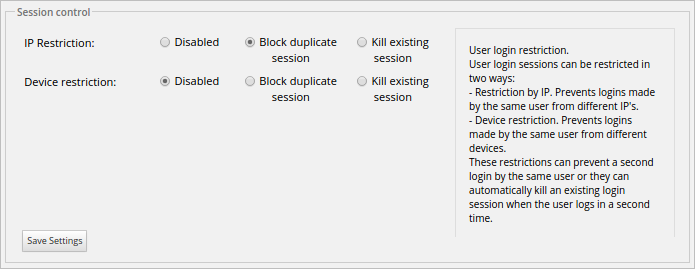
The user will be able to log in on the same device, but ProcessMaker will kill the previous session and start a new one each time the user logs in. The user will lose the session if the same login credentials are used on another device.
Password Policy
This option allows users to set the password policy, which sets the guidelines and restrictions for user passwords. To use this option, go to the Enhanced Login tab inside the Admin panel, then click on the Password Policy option in the left panel.
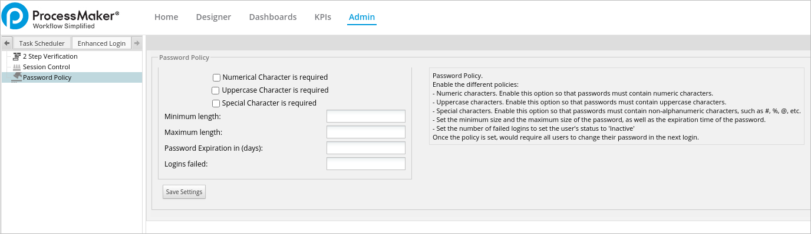
Note: Every time the user logs on ProcessMaker with a different user account, the login window requires the user to change the password only the first time after the password configuration is applied.
The options are detailed below:
- Numeric characters: Enable this option to make sure passwords contain numeric characters.
- Uppercase characters: Enable this option to make sure passwords contain uppercase characters.
- Special characters: Enable this option to make sure passwords contain special characters. Special characters include:
[ ? / < ~ # `! @ $% ^ & * ( ) + = } |: " ; ' , > { - Minimum Length: Sets the minimum length of the password. The field will be marked in red if the password set by the user contains less characters than required by this property.
- Maximum Length: Sets the maximum size of the password.
- Password Expiration in (days): Set the number of days the password is valid, so users change it after the specified number of days. If this field is left blank it will be marked in red, because the minimum accepted value is 1.
- Logins Failed: Number of failed logins before setting the user's status to Inactive.
Click on the Save Settings button to save the password configuration.
If the number of attempts surpasses the number set in the Logins Failed field, the following message is shown:

The user's status will be set to Inactive immediately, and only an administrator user will be able to change the user's status.
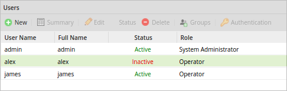
The failed attempts can be reviewed inside the file named loginFailed.log, which is located at:
Linux:
Windows:
This file contains the date, time, user, IP address, workspace and browser of the last failed attempt. In the example below it is detailed two failed login attempts of a user named Alex.
2017-10-05 20:22:05 | Many failed authentication attempts for USER: alex | IP: 172.16.1.75 | WS: workflow32O | BROWSER: Mozilla/5.0 (Windows NT 6.3; Win64; x64; rv:55.0) Gecko/20100101 Firefox/55.0